Part 0 - Camera Calibration and 3D Scanning
Screenshots of camera frustums visualization in Viser
Part 1 - Fit a Neural Field to a 2D Image
Model architecture and training report:
For this part of the project, I implemented a simple MLP with 4 hidden layers of 128 neurons each, using ReLU activations. I also included positional encoding with a maximum frequency of 10 to help the model capture high-frequency details in the image. I trained the model using the Adam optimizer with a learning rate of 0.001 and a batch size of 1024 for a total of 1000 iterations. The loss function used was Mean Squared Error (MSE) between the predicted pixel colors and the ground truth pixel colors.
Test image progression
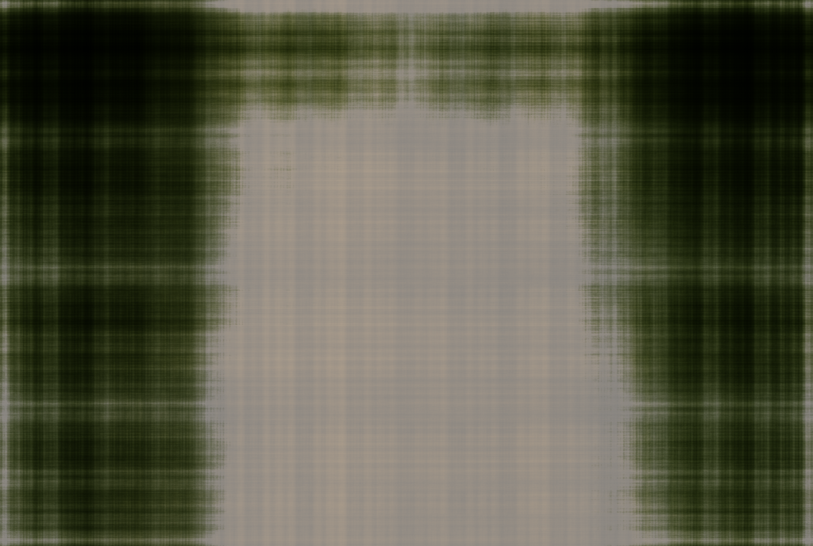
Predicted test image at iteration 20
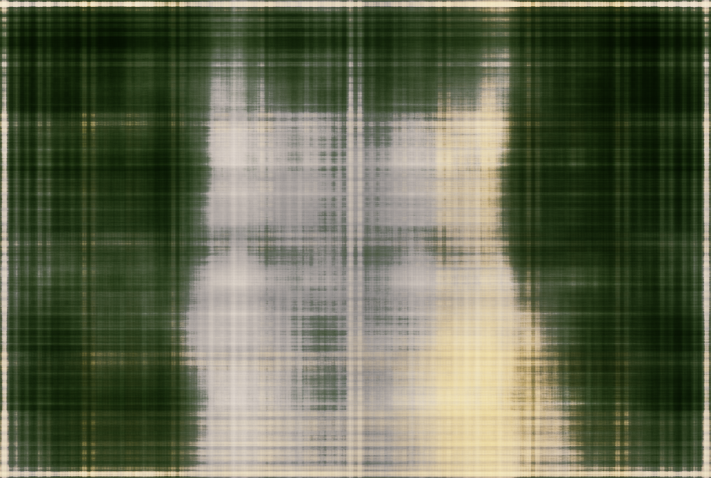
Predicted test image at iteration 40
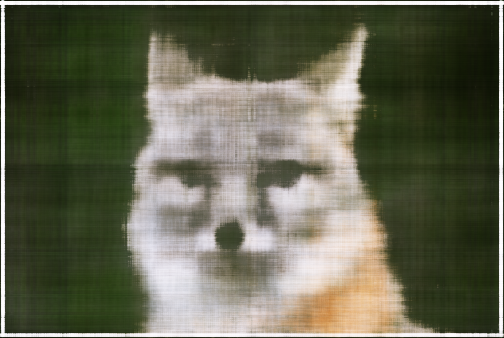
Predicted test image at iteration 100
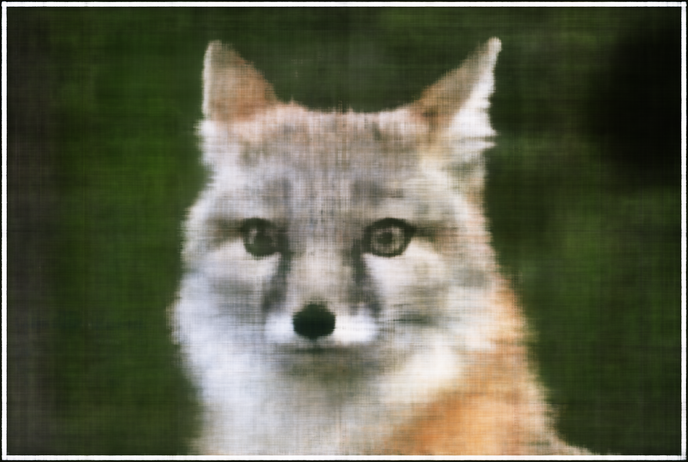
Predicted test image at iteration 300
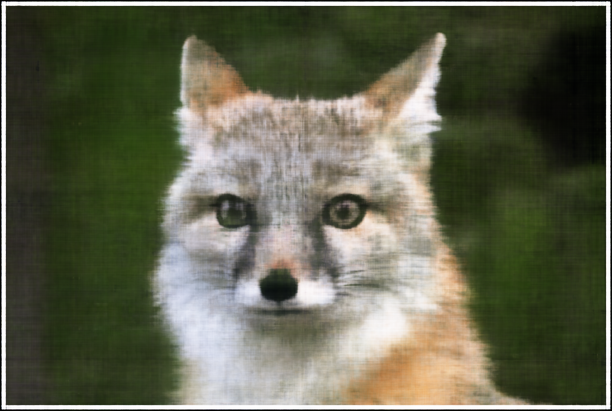
Predicted test image at iteration 900
Own image progression
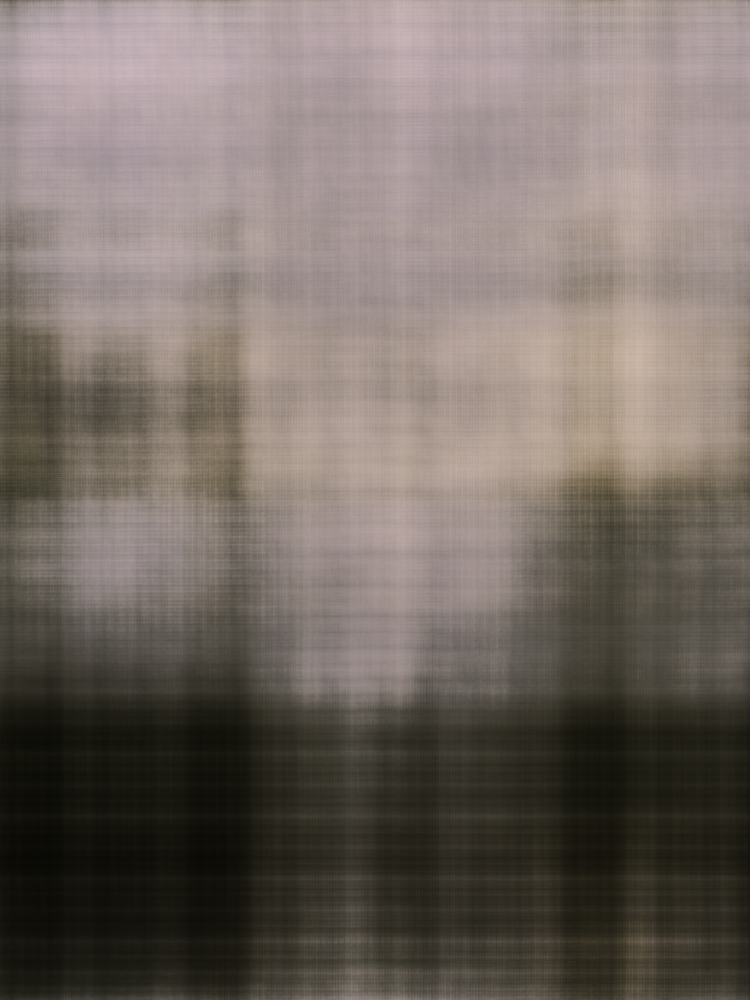
Predicted test image at iteration 20
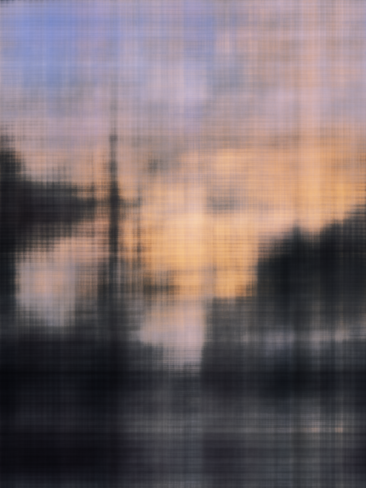
Predicted test image at iteration 40
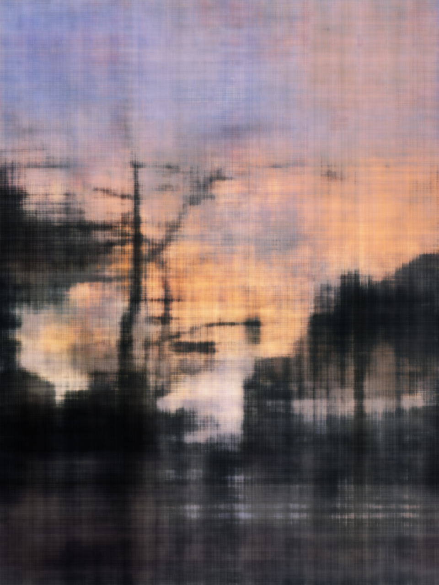
Predicted test image at iteration 100
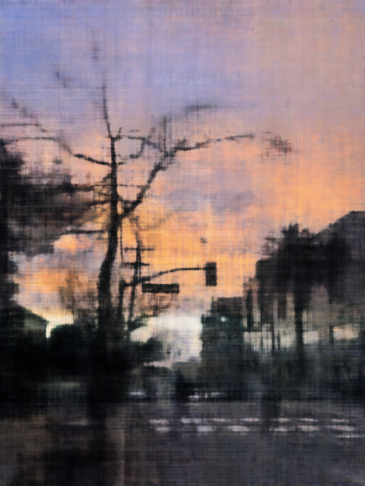
Predicted test image at iteration 300
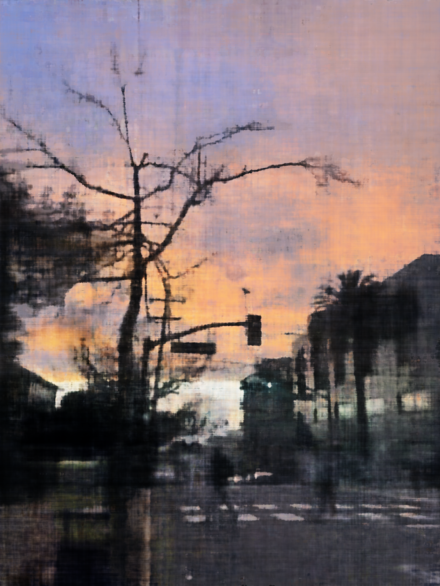
Predicted test image at iteration 1000
2x2 Grid - max positional encoding frequency and width combos
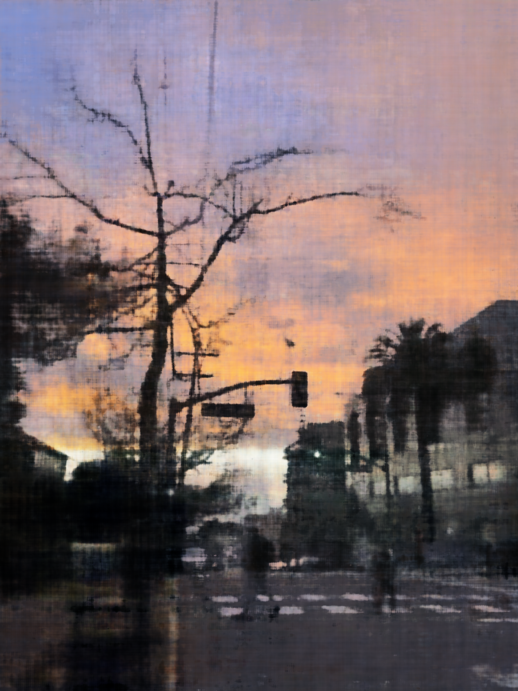
Low-Width, Low Frequency: at iteration 1000
High-Width, Low Frequency: at iteration 1000
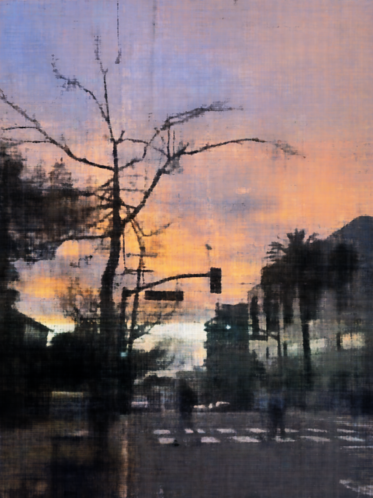
High-Width, High Frequency: at iteration 1000
Low-Width, High Frequency: at iteration 1000
PSNR curve for training my own image
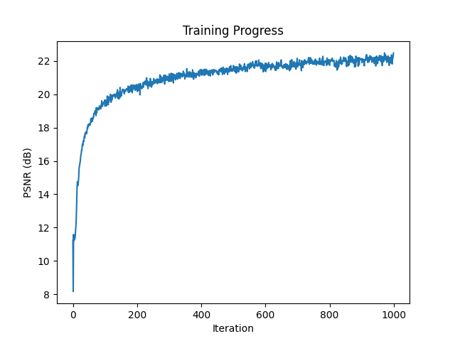
PSNR Curve for Image2
Part 2
For the feature matching, I iterated through each feature descriptor and identified its 2 nearest neighbors in the other image using Lowe's ratio test, and was able to set a threshold of 0.7 for this image that filtered out most bad matches. Then I displayed the matches across both images, and adjusted the parameters to get a good number of accurate matches.

Warping with Bilinear Interpolation
Using my mask and mosiac blending implementation from part 3A, I was able to use the created homography matrix to warp and blend my two images in Mountain Tamalpais, and it seemed that everything worked out, since the only thing I really changed was the values of the homography matrix H.
I then used the same process on another set of images of Kresge Library, and they also seemed to blend well using the same threshold, c, and min_distance values as the Mountain Tamalpais image.
However, when I tried to use the same process on the coffee shop image sets I used in part A of the project, the automatic feature matching did not work well, and the images were misaligned significantly. I tried to lower the threshold min_distance values, which reduced the blurring in the blending, but it still did not compare to the manual stitching mosiac result from part A. I believe that the automatic feature matching simply did not find good enough corresponding points and features perhaps due to how busy the image was, while with the manual selection, I was able to pick out the best points to align the images well.